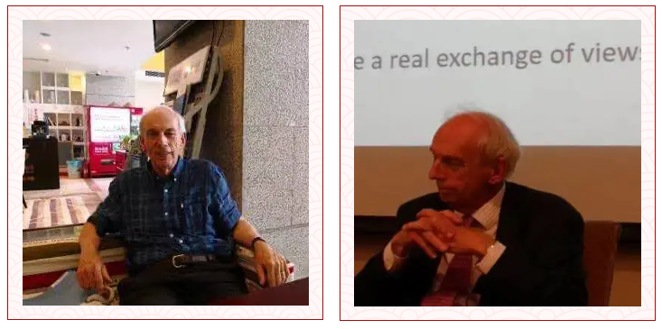
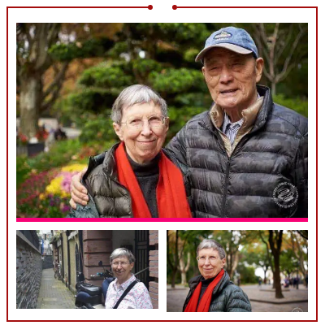

收录于合集 #名家访谈 6个

访者按
唐世平 ：这个短文也拖了很久，直到今天才弄好。另外，在2018年5月，Keohane和他的夫人Nannerl O. Keohane访问复旦时，我有幸对他做了一个访谈（大致一个多小时）。访谈内容将在国政学人下一篇访谈栏目中呈现。
“国政学人·名家访谈” 第3期将带来唐世平教授对罗伯特·基欧汉（Robert O. Keohane）教授的专访（一）。 ****
【本期嘉宾】
罗伯特·基欧汉
 图1：2018-05-28，摄于上海，复旦大学光华楼
图2：2018-05-29，摄于上海，复宣酒店
采访人
唐世平： 复旦大学特聘教授、陈树渠讲席教授、教育部“长江学者”特聘教授。他的Social Evolution of International Politics (《国际政治的社会演化》）（牛津大学出版社，2013年）于2015年获得国际研究协会（ISA）的“年度最佳著作”奖。他是获得这一奖项的第一位中国学者和第一位亚洲学者。他的最新英文专著是On Social Evolution: Phenomenon and Paradigm（《论社会演化：现象与范式》）（Routledge, 2020）。他还是“ 掌中星球”新一代旅游商业平台的创始人兼CEO。（点击参与年货节活动，助力扶贫事业！）
访谈嘉宾
罗伯特·基欧汉（ Robert O. Keohane） ： 根据TRIP（Teaching, Researching, and International Policy）的调查，基欧汉是过去20年里，最有影响的国际政治学者之一。他的声望还体现在他获得过所有和国际关系与政治学相关的荣誉，包括：美国艺术与科学院院士、美国科学院院士（2005）、英国学院院士（2010，British Academy，相当于美国艺术与科学院）、美国哲学学会院士（会员）、ISA主席（1988-1989）、美国政治学会主席（1999-2000）。他拿过的大奖包括：Grawemeyer Award for Ideas Improving World Order（1989；因为他的After Hegemony， 1984) ，Johan Skytte Prize in Political Science（2005），Balzan奖（2016）。2014年，Keohane获得了美国政治学会的James Madison Award （美国政治学的终身成就奖；Waltz是在2000年获得该奖的）。
基欧汉的成长经历
基欧汉的成长经历是非常顺利的。他的父母在UC Berkeley相识，然后结婚。基欧汉出生于1941年，在芝加哥附近长大。基欧汉从小聪慧，作为天才少年在高中期间就提前接受大学教育，于1957年（16岁）进入芝加哥附近的Shimer College就读本科。1961年本科毕业之后，进入Harvard，师从Stanley Hoffman和Judith Shklar攻读博士学位，于1966年获得博士学位。并在此之前就加入Swarthmore College（1965-1973）执教（Waltz也曾经在该校执教；Swarthmore College是美国最好的文理本科学院之一）。之后他每隔几年就相继转会Stanford（1973-1981）、Brandies（1981-1985）、Harvard（1985-1996）、Duke（1996-2005）、Princeton（2006-）。他最终在2018年正式从Princeton退休。
基欧汉在Swarthmore College执教期间，坚决反对美国卷入越南战争（同Waltz、Jervis等人一样）。因此，基欧汉对美国的外交建制派非常不认同。因而他也不进入政府，甚至不愿意追求政策影响。（几乎可以肯定，基欧汉是坚定的民主党人士）
基欧汉的学术贡献
基欧汉的学术贡献对于国际关系专业的学生应该都非常熟悉。 他的学术贡献主要有几个方面： 创立了一个学派（“新自由主义”，严格来说应该叫国际政治中的“新制度主义”），对国际制度和多边主义，国际组织的研究具有奠基性的贡献。其中，他的After Hegemony 《霸权之后》（1984）被公认是“新制度主义”的奠基之作。他和Joseph Nye的合著Power and Interdependence《权力与相互依赖》（1977），甚至他们更早的Transnational Relations and World Politics（1972）可以认为是After Hegemony的前奏。
可能不少人都会认为基欧汉是因为研究制度而研究制度。但是，真正的动因是他想研究如何才能够达成超越冷战的合作（特别是在1962年的古巴导弹危机之后）。而Keohane（1984）很大程度上就是反驳Waltz（1979；这本书的主要内容其实在1975已经发表）关于国际合作的悲观结论。
如同Waltz、Jervis、Keohane、Lebow，他们都是被冷战（以及二战）所造就的一两代人。和许多希望通过武力赢得冷战的人不同（比如Schelling），Waltz、Jervis、Keohane、Lebow等都是希望避免冷战变成热战，甚至“逃脱”冷战。
另外，如同Waltz从经济学获得了许多灵感一样，基欧汉也主要是从经济学（特别是组织行为学、新制度经济学，尤其是Williamson的研究）中获得许多灵感。
基欧汉的学科贡献
基欧汉的学科贡献：IO作为一个杂志与IPE作为一个学科
**
**
许多杰出的学者只有学术贡献，也就是说，他们对学科的贡献更多地是通过他们的作品来体现的。但 基欧汉是少数那些对学科发展有更加直接贡献的学者。 他最突出的贡献当然是为International Organization（IO，国际组织杂志）成为今天最受尊重的IR杂志之一奠定了重要的基础。
1947年，IO成立。但是在1974年之前，IO都是由一个委员会来主导。1974-1980期间，基欧汉担任IO的主编。在他的领导下，IO有了更加明确的方向，并成为国际政治领域最为重要的杂志之一。因此，IO如今的最佳年度论文奖是以 基欧汉命名的。
由于基欧汉的研究同时覆盖国际组织、国际制度，以及国际政治经济学（IPE），所以IPE也成了IO杂志的重要关注点。事实上，基欧汉的多位学生（最著名的有：Vinod Aggarwal、 Lisa Martin、Helen Milner、Beth Simmons）也是如此。从这点来说，基欧汉为IPE作为一个学科在IR学界获得今天的地位做出了非常重要的贡献。
基欧汉的绝大部分学生都在这些比较主流的领域里从事研究。Judith Ann Tickner是基欧汉的学生中不太一样的一位，是“女权IR”以及“性别研究（gender studies）”的主要推动者之一。Tickner是基欧汉在Brandies执教时的博士生，之后她长期执教于USC）
KKV的设计社会研究（1994）
基欧汉 还是KKV（1994）的《设计社会研究（Designing Social Inquiry: Scientific Inference in Qualitative Research）》的其中一个“K”（另一个是当然是Gary King）。可以想象，尽管基欧汉的字母顺序在King之前，但作者顺序却是King排在最前面，那是因为这本书的核心立场来自King。鉴于我在其他地方已经对这本书有比较详细的批评讨论，在此不再赘述。
有点讽刺(ironic)的是，Keohane（2020，14）也在抱怨：“Two aspects of contemporary social science that are distressing to me are the relative absence of interesting theory and the exclusion of certain important problems from scientific analysis on the grounds that neither rigorous quantitative research, nor experiments, can be conducted on them.” 可这不正是Gary King所期待的方向么？而这也正是认定causal inference是唯一的目标（或者手段）带来的必然结果。
【在下一篇关于Keohane的短文中，我会介绍一些我和他就KKV（1994），以及对机制和因素的理解的问题的一些相关通讯。】
基欧汉的核心作品
从专著的数量上来说，基欧汉的专著数量不算多。凭借少数基本专著，就能成就一个学派，确实值得我们晚辈学习。【因此，还是要出精品！】Keohane R. 1982. The Demand for International Regimes. International Organization. 36: 325–355 （这篇文章基本展现了他的 After Hegemony （1984）的理论核心，即一个functionalism的国际制度理论。）Keohane R. 1984. After Hegemony: Cooperation and Discord in the World Political Economy. Princeton, NJ: Princeton University PressKeohane R. 2002. Power and Governance in a Partially Globalized World. London: Routledge (collection)Keohane R, Nye J. 1972. Transnational Relations and World Politics. Cambridge, MA: Harvard University PressKeohane R, Nye J. 1977. Power and Interdependence: World Politics in Transition. Boston: Little BrownKing, Keohane, Verba. 1994. Designing Social Inquiry: Scientific Inference in Qualitative Research. Princeton, NJ: Princeton University Press
参考资料
[1] Robert O. Keohane, 2020. Understanding Multilateral Institutions in Easy and Hard Times. Annual Review of Political Science Vol. 23:1-18 (Volume publication date May 2020)[2] 2008, “Conversation with History: Robert Keohane,” UC Berkeleyhttp://globetrotter.berkeley.edu/people4/Keohane/keohane- con0.html[3] Interview with Robert O. Keohane. 2016, E-IR, https://www.e-ir.info/2016/02/26/interview-robert-o-keohane/[4] “Cooperation and Discord in the World Political Economy: Interview with Professor Robert Keohane,” May 11, 2020 (Harvard Political Review)
花 絮
Keohane的夫人Nannerl O. Keohane也是一位非常著名的学者（政治哲学，因此也属于政治学）。Nannerl毕业于Wellesley College，并且之后成为Wellesley College的校长（1981-1993）。之后她还担任了杜克大学的校长（1993-2004；这也是为何Keohane离开Harvard到Duke任教的主要原因）。Nannerl也是AAAS的院士（1991当选）。
关于Nannerl O. Keohane，详见：https://en.wikipedia.org/wiki/Nannerl_O._Keohane
非常有趣的是，Keohane的夫人Nannerl O. Keohane还是Betty Barr女士的侄女。关于中国抗日战争中的美国人，许多人可能知道飞虎队、陈纳德等等，Betty Barr的故事也是很有趣的。Betty Barr 1933年出生于上海，父亲是一位苏格兰的传教士，母亲是美国人。1937年日军进攻上海，她们一家前往达拉斯。1938年，举家回到上海。1941年日军偷袭珍珠港之后，1943年，她们一家都被关押在龙华集中营（现在的上海中学）。1950年，Betty去往美国，在Wellesley College（最著名的女子学院）执教，之后又到香港教授英文。1973年，获得了一个在上海工作两年的一个教学项目，她回到她魂牵梦绕的上海，。1975年离开，之后于改革开放后1984年再一次回到上海，并和她的先生George Wang结婚，在上海外国语大学任教，从此定居上海直至退休。Betty和她的先生现在仍住在上海。(Betty和Wang的照片，来源于网络)

编辑 高佳美
美编 聂涵琳
感谢 唐世平 教授的系列专访稿件
感谢 唐世平 教授对 国政学人 的鼎立支持！
更多推荐 ****
国政学人名家专访 第1期 ****
国政学人名家专访 第2期 ****
点击参与掌中星球年货节活动
共同助力扶贫事业！
好好学习，天天“在看”